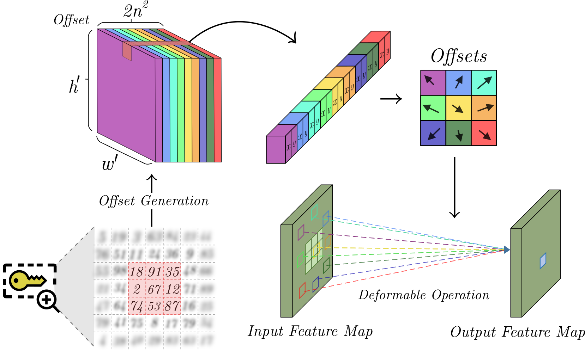

In the era of cloud computing and data-driven applications, it is crucial to protect sensitive information to maintain data privacy, ensuring truly reliable systems. As a result, preserving privacy in deep learning systems has become a critical concern. Existing methods for privacy preservation rely on image encryption or perceptual transformation approaches. However, they often suffer from reduced task performance and high computational costs.
To address these challenges, we propose a novel Privacy-Preserving framework that uses a set of deformable operators for secure task learning. Our method involves shuffling pixels during the analog-to-digital conversion process to generate visually protected data. Those are then fed into a well-known network enhanced with deformable operators.
Using our approach, users can achieve equivalent performance to original images without additional training using a secret key. Moreover, our method enables access control against unauthorized users. Experimental results demonstrate the efficacy of our approach, showcasing its potential in cloud-based scenarios and privacy-sensitive applications.
Deformable operators are utilized for their flexibility in extracting features from an input.
Based on a key, an offset is generated and introduced into a deformable operation that indicates the respective positions for extracting relevant features. Feature maps remain private throughout the network via random keys, safeguarding the data at every stage.
@INPROCEEDINGS{10446218,
author={Perez, Fabian and Lopez, Jhon and Arguello, Henry},
booktitle={ICASSP 2024 - 2024 IEEE International Conference on Acoustics, Speech and Signal Processing (ICASSP)},
title={Privacy-Preserving Deep Learning Using Deformable Operators for Secure Task Learning},
year={2024},
pages={5980-5984},
keywords={Deep learning;Training;Privacy;Cloud computing;Encryption;Computational efficiency;Task analysis;Computational Imaging;Deformable Operators;Image Privacy;Image Encryption},
doi={10.1109/ICASSP48485.2024.10446218}}